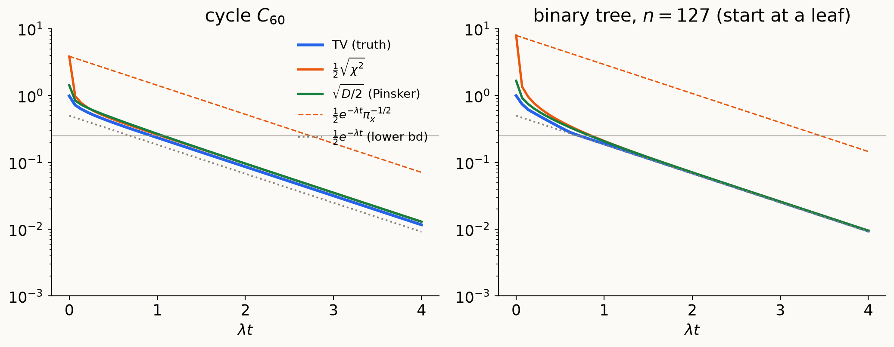
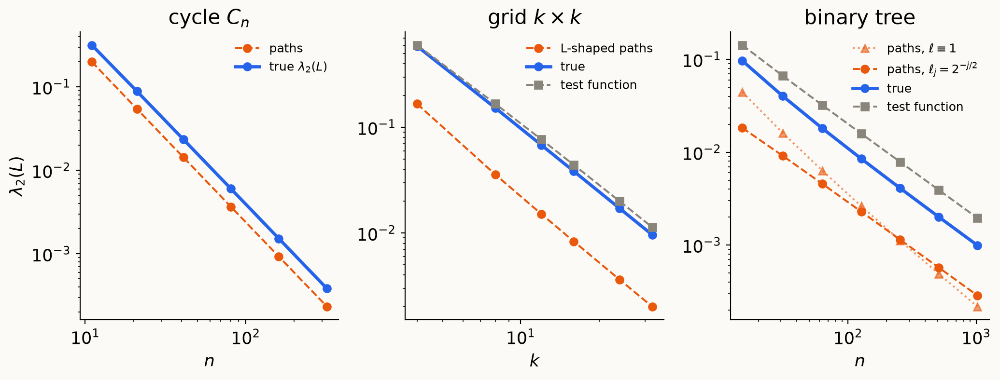
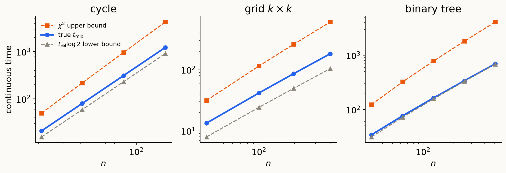

Distances to equilibrium · spectral gap · mixing times · canonical paths
\(G = (V,E,w)\) undirected, connected; \(\pi_i = d_i/\mathrm{vol}(V)\); \(P = D^{-1}A\); random-walk Laplacian \(L_{rw} = D^{-1}L = I - P\).
Graphs as differential operators. \(L = \nabla^*\nabla\) and \(L_{rw} = \nabla_\pi^*\nabla\) (up to \(\mathrm{vol}(V)\)): the same \(-\operatorname{div}\nabla\) with different vertex measures. Dirichlet form \[\mathcal E(f,g) = \langle f,L_{rw}g\rangle_\pi = \tfrac{1}{\mathrm{vol}(V)}\textstyle\sum_{\{i,j\}\in E}w_{ij}(f_i-f_j)(g_i-g_j).\]
The walk. Heat kernel \(H_t = e^{-tL_{rw}}\): measures evolve as \(\mu_t^\top = \mu_0^\top H_t\), functions as \(f_t = H_tf\). Detailed balance makes \(H_t\) self-adjoint in \(L^2(\pi)\), so densities \(h_t = \mu_t/\pi\) obey \(h_t = H_th_0\).
The gap. Eigenbasis \(\varphi_1 = \mathbf 1,\dots,\varphi_n\) of \(L_{rw}\) in \(L^2(\pi)\), \(0 = \lambda_1<\lambda_2\le\dots\le\lambda_n\le2\). Spectral gap \(\lambda := \lambda_2\) = best constant in Poincaré: \(\lambda\operatorname{Var}_\pi(f)\le\mathcal E(f,f)\). Relaxation time \(t_{\rm rel} = 1/\lambda\).
How fast does the walk forget where it started?
For \(\mu\) with density \(h = \mu/\pi\):
| measure form | density form | |
|---|---|---|
| TV | \(\|\mu-\pi\|_{TV} = \tfrac12\|\mu-\pi\|_1 = \max_S|\mu(S)-\pi(S)|\) | \(\tfrac12\,\mathbb E_\pi|h-1|\) |
| \(\boldsymbol{\chi^2}\) | \(\chi^2(\mu\Vert\pi) = \sum_i\frac{(\mu_i-\pi_i)^2}{\pi_i} = \|\mu-\pi\|^2_{1/\pi}\) | \(\operatorname{Var}_\pi(h)\) |
| KL | \(D(\mu\Vert\pi) = \sum_i\mu_i\log\frac{\mu_i}{\pi_i}\) | \(\operatorname{Ent}_\pi(h)\) |
All of the form \(\mathbb E_\pi\Phi(h)\), \(\Phi\) convex, \(\Phi(1) = 0\): \(\;\tfrac12|x-1|,\ (x-1)^2,\ x\log x\).
From a point mass \(\delta_x\), on a bounded-degree graph (\(\pi_x\approx1/n\)):
\[ \|\delta_x-\pi\|_{TV} = 1-\pi_x\le1,\qquad D(\delta_x\Vert\pi) = \log\tfrac1{\pi_x}\approx\log n,\qquad\chi^2(\delta_x\Vert\pi) = \tfrac1{\pi_x}-1\approx n . \]
Remember \(1\) vs. \(\log n\) vs. \(n\). It is the whole story of §3.
Lemma. For every \(\mu\):
Proofs. (1) Cauchy–Schwarz in \(L^2(\pi)\). (3) Jensen for concave \(\log\) under \(\mu\): \[ D = \mathbb E_\mu\log h\le\log\mathbb E_\mu h = \log\mathbb E_\pi h^2 = \log(1+\operatorname{Var}_\pi h). \] (2) Standard (reduce to two points, then calculus).
Lemma. For convex \(\Phi:\mathbb R\to\mathbb R\) (applied pointwise, as on the previous slide), \(t\mapsto\mathbb E_\pi\Phi(H_th)\) is non-increasing.
Proof. Jensen pointwise, \(\Phi(H_th)\le H_t\Phi(h)\); stationarity, \(\mathbb E_\pi H_tg = \mathbb E_\pi g\). \(\square\) (For TV: the \(\ell_1\) contraction exercise.)
TV is the distance we want. \(\boldsymbol{\chi^2}\) and entropy are the ones we can differentiate along the flow and close with a functional inequality.
Mixing time: worst case over starting vertices; by convexity of the distance, this is also the worst case over all starting distributions.
\[ d(t) := \max_x\|\delta_xH_t - \pi\|_{TV},\qquad t_{\rm mix}(\varepsilon) := \min\{t: d(t)\le\varepsilon\}, \]
\[ t_{\rm mix} := t_{\rm mix}(\tfrac14). \]
Same with \(\sqrt{\chi^2}\) (\(\ell^2\)-mixing) or \(D\) (entropy mixing). Discrete/lazy: replace \(H_t\) by \(P_{\rm lazy}^t\).
\(h_t = H_th\) satisfies \(\partial_th_t = -L_{rw}h_t\). Differentiate \(\mathbb E_\pi\Phi(h_t)\) directly:
\[ \frac{d}{dt}\mathbb E_\pi\Phi(h_t) = \mathbb E_\pi\big[\Phi'(h_t)\,\partial_th_t\big] = -\langle\Phi'(h_t),L_{rw}h_t\rangle_\pi = -\mathcal E\big(\Phi'(h_t),h_t\big). \]
\[ \mathcal E(\Phi'(h_t),h_t) = \frac1{\mathrm{vol}(V)}\sum_{\{i,j\}\in E}w_{ij}\big(\Phi'(h_i)-\Phi'(h_j)\big)(h_i-h_j). \]
Convex \(\Phi\) \(\Rightarrow\) \(\Phi'\) non-decreasing \(\Rightarrow\) every term \(\ge0\) (same-signed factors). Hence
\[ \frac{d}{dt}\mathbb E_\pi\Phi(h_t) = -\mathcal E(\Phi'(h_t),h_t)\ \le\ 0. \qquad\square \]
Same template, two more times:
Theorem. For all \(h\) and \(t\ge0\): \[\operatorname{Var}_\pi(H_th)\le e^{-2\lambda t}\operatorname{Var}_\pi(h),\qquad\text{i.e.}\qquad\chi^2(\mu_t\Vert\pi)\le e^{-2\lambda t}\chi^2(\mu_0\Vert\pi).\] Sharp: equality for \(h = 1+\epsilon\varphi_2\).
Proof 1 (spectral). \[ \operatorname{Var}_\pi(H_th) = \sum_{k\ge2}e^{-2\lambda_kt}\langle h,\varphi_k\rangle_\pi^2\le e^{-2\lambda t}\sum_{k\ge2}\langle h,\varphi_k\rangle_\pi^2 . \qquad\square \]
\(h_t = H_th\); \(\;\mathbb E_\pi h_t\equiv c\) is conserved. Then
\[ \frac{d}{dt}\operatorname{Var}_\pi(h_t) = 2\langle h_t - c,\ \partial_th_t\rangle_\pi = -2\langle h_t - c, L_{rw}h_t\rangle_\pi = -2\,\mathcal E(h_t,h_t). \]
Variance dissipates at rate \(2\mathcal E\). Poincaré: \(\mathcal E\ge\lambda\operatorname{Var}\), so \(\frac d{dt}\operatorname{Var}\le-2\lambda\operatorname{Var}\); Grönwall. \(\square\)
No diagonalization. Only: (dissipation identity) + (functional inequality).
Conversely, decay at rate \(2c\) for all \(h\) \(\Rightarrow\) differentiate at \(t=0\) \(\Rightarrow\) \(c\le\lambda\). Gap = optimal \(\chi^2\) rate.
Geometry: densities in \(L^2(\pi)\), where the distance to equilibrium is \(\|h-1\|_\pi^2 = \chi^2(\mu\Vert\pi)\). Energy: \(F(h) := \tfrac12\mathcal E(h,h) = \tfrac12\,\|\nabla h\|_w^2/\mathrm{vol}(V)\).
Gradient. \(F(h+\epsilon v) = F(h) + \epsilon\,\mathcal E(h,v) + O(\epsilon^2) = F(h) + \epsilon\,\langle L_{rw}h, v\rangle_\pi + O(\epsilon^2)\), so
\[ \nabla_\pi F(h) = L_{rw}h \qquad\Longrightarrow\qquad \partial_th_t = -\nabla_\pi F(h_t) = -L_{rw}h_t , \]
which is the heat equation for densities from Lecture 2. Heat flow = steepest descent of the energy in the \(\chi^2\) geometry.
Poincaré = strong convexity. \(F(h)\ge\frac\lambda2\|h-\mathbb E_\pi h\|_\pi^2\): the energy is \(\lambda\)-strongly convex transverse to its minimizers (the constants). The gradient flow of a \(\lambda\)-strongly convex function contracts the squared distance to its minimizer at rate \(2\lambda\): this is the \(\chi^2\) theorem. Proof 2 was exactly this computation, \(\frac{d}{dt}\tfrac12\|h_t-1\|_\pi^2 = -\langle h_t-1,\nabla_\pi F(h_t)\rangle_\pi = -2F(h_t)\).
Aside: \(\mathcal E\) is a dissipative bracket. In the language of GENERIC/metriplectic dynamics (Grmela–Öttinger; Morrison), \(\mathcal E\) is symmetric, PSD, and degenerate on the conserved quantity — \(\mathcal E(f,\mathbf 1)=0\) since \(L_{rw}\mathbf1=0\) — exactly the axioms of a dissipative bracket. No Jacobi identity: that’s the axiom of the other, antisymmetric Poisson-bracket half of such systems, which is simply absent here — the heat flow is pure dissipation, no reversible/Hamiltonian part.
Discretizing time: \(h_{k+1} = \arg\min_h\Big\{F(h) + \frac{1}{2\tau}\|h-h_k\|_\pi^2\Big\} = (I+\tau L_{rw})^{-1}h_k\ \to\ H_th_0\) as \(\tau\to0\).
Question: is there a geometry in which the heat flow is the gradient flow of the entropy, and does convexity of the entropy give entropy decay?
Theorem. For the continuous-time walk, \(\pi_{\min} = \min_x\pi_x\): \[ \frac1\lambda\log\frac1{2\varepsilon}\ \le\ t_{\rm mix}(\varepsilon)\ \le\ \frac1\lambda\Big(\tfrac12\log\frac1{\pi_{\min}} + \log\frac1{2\varepsilon}\Big). \]
Upper. Lemma (1) + §2: \(\;\|\delta_xH_t-\pi\|_{TV}\le\tfrac12\sqrt{\chi^2(\delta_xH_t\Vert\pi)}\le\tfrac12e^{-\lambda t}\pi_x^{-1/2}\).
Lower. Scale \(f = \varphi_2\) so \(\|f\|_\infty = 1 = |f(x)|\). Then \(\mathbb E_\pi f = 0\), \((H_tf)(x) = e^{-\lambda t}f(x)\), and \[ e^{-\lambda t} = |\mathbb E_{\delta_xH_t}f - \mathbb E_\pi f|\le\|\delta_xH_t-\pi\|_1\|f\|_\infty = 2\|\delta_xH_t-\pi\|_{TV}. \qquad\square \]

\(\chi^2\) starts at \(\approx n\) and must spend time \(\approx\frac{\log n}{2\lambda}\) just getting below \(1\). TV starts at \(\le1\).
Same computation as Proof 2, with \(\operatorname{Ent}_\pi\) in place of \(\operatorname{Var}_\pi\):
\[ \frac d{dt}\operatorname{Ent}_\pi(h_t) = \mathbb E_\pi\big[(1+\log h_t)\,\partial_th_t\big] = -\langle\log h_t, L_{rw}h_t\rangle_\pi \]
\[ = -\mathcal E(h_t,\log h_t)\ \le\ 0 . \]
\(\mathcal E(h,\log h)\): entropy production (discrete Fisher information).
From the gap alone (Lemma 3): \(\;D(\mu_t\Vert\pi)\le\log\big(1 + e^{-2\lambda t}\chi^2(\mu_0\Vert\pi)\big)\) — rate \(2\lambda\) eventually, but the same \(\log n\) burn-in.
To close the loop we need a new functional inequality, the modified log-Sobolev inequality:
\[ \rho_0\operatorname{Ent}_\pi(h)\le\mathcal E(h,\log h)\quad\Longrightarrow\quad D(\mu_t\Vert\pi)\le e^{-\rho_0t}D(\mu_0\Vert\pi). \]
With Pinsker:
\[ t_{\rm mix}(\varepsilon)\le\frac1{\rho_0}\Big(\log\log\frac1{\pi_{\min}} + \log\frac1{2\varepsilon^2}\Big) \qquad\text{vs.}\qquad \frac1\lambda\Big(\tfrac12\log\frac1{\pi_{\min}} + \log\frac1{2\varepsilon}\Big). \]
The price is the constant: entropy can’t decay faster than twice the gap,
\[ \rho_0\ \le\ 2\lambda . \]
Proof. Linearize at equilibrium, \(h = 1+\epsilon g\), \(\mathbb E_\pi g = 0\): \[ \operatorname{Ent}_\pi(h) = \tfrac{\epsilon^2}2\operatorname{Var}_\pi g + O(\epsilon^3),\qquad \mathcal E(h,\log h) = \epsilon^2\mathcal E(g,g) + O(\epsilon^3). \] MLSI forces \(\rho_0\le 2\,\mathcal E(g,g)/\operatorname{Var}_\pi g\) for every \(g\); take \(g = \varphi_2\). \(\square\)
Entropy wins when \(\rho_0\) is comparable to the gap. When is it? How do we bound it? → later lecture.
Upper bounds: test functions. Any non-constant \(f\): \(\;\lambda\le\mathcal E(f,f)/\operatorname{Var}_\pi(f)\). Make \(f\) change slowly across a bottleneck.
Degree comparison. If \(d_{\min}\le d_i\le d_{\max}\):
\[ \frac{\lambda_2(L)}{d_{\max}}\le\lambda = \lambda_2(L_{rw})\le\frac{\lambda_2(L)}{d_{\min}}. \]
(Both are \(\min_f f^\top Lf\,/\min_c\|f-c\|_m^2\), with \(m = d\) vs. \(m = \mathbf 1\).) Our examples have \(1\le d\le4\): work with \(L\).
Lower bounds: canonical paths — the discrete version of the 1-D Poincaré proof:
\[ f(b)-f(a) = \int_a^bf'\quad+\quad\text{Cauchy–Schwarz}. \]
For each ordered pair \((a,b)\) choose a path \(\gamma_{ab}\); choose edge lengths \(\ell_e>0\) (default \(\ell\equiv1\)). Congestion:
\[ \kappa := \max_{e\in E}\ \frac1{w_e\ell_e}\sum_{(a,b):\,e\in\gamma_{ab}}\ell(\gamma_{ab}),\qquad\ell(\gamma) = \sum_{e\in\gamma}\ell_e . \]
Theorem (Jerrum–Sinclair; Diaconis–Stroock). \(\;\sum_{a,b}(f_a-f_b)^2\le\kappa\,f^\top Lf\), hence \(\;\lambda_2(L)\ge\dfrac{2n}\kappa\).
Proof. \((f_b - f_a)^2 = \big(\sum_{e\in\gamma_{ab}}\nabla_ef\big)^2\le\ell(\gamma_{ab})\sum_{e\in\gamma_{ab}}\frac{(\nabla_ef)^2}{\ell_e}\). Sum over pairs, swap sums:
\[ \sum_{a,b}(f_a-f_b)^2\le\sum_ew_e(\nabla_ef)^2\cdot\underbrace{\frac{1}{w_e\ell_e}\sum_{\gamma_{ab}\ni e}\ell(\gamma_{ab})}_{\le\kappa},\qquad\sum_{a,b}(f_a-f_b)^2 = 2n\|f-\bar f\|^2 . \ \square \]
Exact (Fourier): \(L\) has eigenvalues \(2-2\cos(2\pi j/n)\); since \(D = 2I\), \(\;L_{rw} = L/2\) and \[\lambda = 1-\cos\tfrac{2\pi}n = 2\sin^2\tfrac\pi n\approx\frac{2\pi^2}{n^2}\approx\frac{19.7}{n^2}.\]
Canonical paths (\(n = 2m+1\), shortest paths, \(\ell\equiv1\)): each vertex has 2 vertices at each distance \(s = 1,\dots,m\). By rotation symmetry all edges carry equal load:
\[ \kappa = \frac1n\sum_{(a,b)}|\gamma_{ab}|^2 = 2\sum_{s=1}^ms^2 = \frac{n(n^2-1)}{12} \qquad\Longrightarrow\qquad \lambda_2(L)\ge\frac{2n}{\kappa} = \frac{24}{n^2-1}. \]
Divide by \(d = 2\) to compare with the exact \(\lambda\): \[ \frac{12}{n^2-1}\ \le\ \lambda\ \approx\ \frac{19.7}{n^2}. \] Right order; constant \(12\) vs. \(2\pi^2\approx19.7\).
Test function \(f(x,y) = x - \frac{k+1}2\): only horizontal edges see a difference (each 1),
\[ \lambda_2(L)\le\frac{k(k-1)}{k\cdot k(k^2-1)/12} = \frac{12}{k(k+1)},\qquad\lambda\le\frac{6}{k(k+1)}\ \ (d_{\min} = 2). \]
Canonical paths, “L-shaped”: horizontal along \(a\)’s row to \(b\)’s column, then vertical. Length \(\le2(k-1)\).
\[ \kappa\le\frac{k^3}2\cdot2(k-1)\quad\Longrightarrow\quad\lambda_2(L)\ge\frac{2}{k(k-1)},\qquad\lambda\ge\frac1{2k(k-1)}\ \ (d_{\max} = 4). \]
So \(\lambda = \Theta(1/k^2) = \Theta(1/n)\). (Exact: \(\lambda_2(L) = 2-2\cos\frac\pi k\approx\frac{\pi^2}{k^2}\), via \(L(G\,\square\,H) = L_G\otimes I + I\otimes L_H\) and the Neumann cosines of the path.)
Test function: \(+1\) on the left subtree, \(-1\) on the right, \(0\) at the root.
\[ \lambda\le\frac{2}{2n-4} = \frac1{n-2}. \]
The root is a bottleneck: two edges separate two halves of size \(\approx n/2\). (Cheeger next week: conductance \(\approx 2/n\).)
Paths are forced. An edge at depth \(j\) cuts off \(s_j = 2^{h-j+1}-1\) vertices: used by \(2s_j(n-s_j)\le n^2/2\) ordered pairs.
Unit lengths: \(|\gamma|\le2h\), so \(\kappa\le n^2h\) and \(\;\lambda_2(L)\ge\dfrac{2}{nh}\) — off by \(\log_2n\). Cauchy–Schwarz charges every edge of a long path equally, but only the top edges are congested.
Weighted lengths \(\ell_e = 2^{-j/2}\) at depth \(j\) (cheap where congested): \(\ell(\gamma)\le2\sum_{j\ge1}2^{-j/2} = 2(\sqrt2+1)\), and with \(s_j<(n+1)2^{-j}\),
\[ \frac1{\ell_e}\sum_{\gamma\ni e}\ell(\gamma)\le2^{j/2}\cdot2s_jn\cdot2(\sqrt2+1) < 2(2+\sqrt2)\,n(n+1) \quad\Longrightarrow\quad \lambda_2(L) > \frac{1}{(2+\sqrt2)(n+1)}. \]
With \(d\le3\): \(\;\dfrac{1}{3(2+\sqrt2)(n+1)}<\lambda\le\dfrac1{n-2}\), so \(\lambda = \Theta(1/n)\).

Parallel lines = right order. Unit-length paths on the tree drift away by \(\log n\).

| \(t_{\rm rel}\) | \(\chi^2\) upper bound | true \(t_{\rm mix}\) | |
|---|---|---|---|
| cycle | \(\Theta(n^2)\) | \(\Theta(n^2\log n)\) | \(\Theta(n^2)\) |
| grid | \(\Theta(n)\) | \(\Theta(n\log n)\) | \(\Theta(n)\) |
| binary tree | \(\Theta(n)\) | \(\Theta(n\log n)\) | \(\Theta(n)\) |
Exactly, from the spectral expansion of \(h_0 = \mathbf 1_x/\pi_x\):
\[ \chi^2(\delta_xH_t\Vert\pi) = \sum_{k\ge2}e^{-2\lambda_kt}\varphi_k(x)^2,\qquad\sum_k\varphi_k(x)^2 = \frac1{\pi_x}. \]
The generic bound pretends all \(n-1\) modes decay as slowly as \(\varphi_2\).
Vertex-transitive graphs: \(\chi^2(\delta_xH_t\Vert\pi) = \sum_{k\ge2}e^{-2\lambda_kt}\). Cycle: \(1-\cos\theta\ge\frac{2\theta^2}{\pi^2}\) gives
\[ \chi^2(\delta_xH_t\Vert\pi)\le2\sum_{j\ge1}e^{-16tj^2/n^2} = O(1)\quad\text{at } t = \Theta(n^2). \]
So even \(\ell^2\)-mixing on the cycle is \(\Theta(n^2)\), not \(n^2\log n\).
Hypercube \(\{0,1\}^d\), \(n = 2^d\) (flip a uniform coordinate at rate 1): eigenvalues \(\frac{2|S|}d\), \(S\subseteq[d]\), so \(t_{\rm rel} = d/2\), and exactly
\[ \chi^2(\delta_xH_t\Vert\pi) = \big(1+e^{-4t/d}\big)^d - 1 \]
which is \(O(1)\) iff \(t\ge\frac d4\log d - O(d)\). TV has a cutoff at the same time (Diaconis; LPW).
| lower: \(t_{\rm rel}\) | upper: \(\chi^2\) + gap | upper: entropy + LSI | truth | |
|---|---|---|---|---|
| hypercube | \(\Theta(d)\) | \(\Theta(d^2)\) | \(\Theta(d\log d)\) | \(\sim\frac d4\log d\) |
LSI constant \(\Theta(1/d)\) (tensorization), and \(\log\log(1/\pi_{\min}) = \log(d\log2)\): tight. The motivating example for log-Sobolev inequalities.
Graph. \(G = (V,E,w)\) undirected, connected; \(d_i = \sum_jw_{ij}\); \(\mathrm{vol}(S) = \sum_{i\in S}d_i\); \(\pi_i = d_i/\mathrm{vol}(V)\), \(\Pi = \operatorname{diag}(\pi)\).
Gradient / divergence. \((\nabla f)(i\to j) = f_j - f_i\); \(\operatorname{div}_m = -\nabla_m^*\) w.r.t. \(\langle\cdot,\cdot\rangle_w\) on edges and \(\langle\cdot,\cdot\rangle_m\) on vertices. \(\nabla^*\nabla = L = D-A\); \(\nabla_d^*\nabla = L_{rw} = D^{-1}L = I-P\); \(\mathcal L = D^{-1/2}LD^{-1/2}\).
Dirichlet form. \(\mathcal E(f,g) = \langle f,L_{rw}g\rangle_\pi = \frac1{\mathrm{vol}(V)}\sum_{\{i,j\}\in E}w_{ij}(f_i-f_j)(g_i-g_j)\).
Walk. \(P = D^{-1}A\); measures \(\mu^\top P\), functions \(Pf\). Random-walk Laplacian \(L_{rw} = I - P\). Continuous time \(H_t = e^{-tL_{rw}}\), generator \(\mathcal A = P - I = -L_{rw}\). Lazy: \(P_{\rm lazy} = \frac12(I+P)\).
Reversibility. \(\Pi P = P^\top\Pi\); densities \(h = \mu/\pi\) evolve as \(h_t = H_th_0\).
Gap / Poincaré. \(\lambda = \lambda_2(L_{rw}) = \min_f\mathcal E(f,f)/\operatorname{Var}_\pi(f)\); \(t_{\rm rel} = 1/\lambda\).
Distances. \(\|\mu-\pi\|_{TV} = \frac12\mathbb E_\pi|h-1|\); \(\chi^2(\mu\Vert\pi) = \operatorname{Var}_\pi(h)\); \(D(\mu\Vert\pi) = \operatorname{Ent}_\pi(h)\). \(\;2\,\mathrm{TV}\le\sqrt{\chi^2}\); \(\mathrm{TV}\le\sqrt{D/2}\); \(D\le\log(1+\chi^2)\).
Mixing time. \(d(t) = \max_x\|\delta_xH_t-\pi\|_{TV}\); \(t_{\rm mix}(\varepsilon) = \min\{t: d(t)\le\varepsilon\}\).
χ² decay. \(\operatorname{Var}_\pi(H_th)\le e^{-2\lambda t}\operatorname{Var}_\pi(h)\); \(\frac d{dt}\operatorname{Var}_\pi(h_t) = -2\mathcal E(h_t,h_t)\).
Mixing from the gap. \(\frac1\lambda\log\frac1{2\varepsilon}\le t_{\rm mix}(\varepsilon)\le\frac1\lambda\big(\frac12\log\frac1{\pi_{\min}}+\log\frac1{2\varepsilon}\big)\).
Entropy. \(\frac d{dt}\operatorname{Ent}_\pi(h_t) = -\mathcal E(h_t,\log h_t)\). MLSI \(\rho_0\operatorname{Ent}_\pi(h)\le\mathcal E(h,\log h)\) \(\Rightarrow\) \(D(\mu_t\Vert\pi)\le e^{-\rho_0t}D(\mu_0\Vert\pi)\); \(\;\rho_0\le2\lambda\).
Canonical paths. \(\kappa = \max_e\frac1{w_e\ell_e}\sum_{\gamma_{ab}\ni e}\ell(\gamma_{ab})\) \(\Rightarrow\) \(\lambda_2(L)\ge2n/\kappa\). Degree comparison: \(\lambda_2(L)/d_{\max}\le\lambda\le\lambda_2(L)/d_{\min}\).